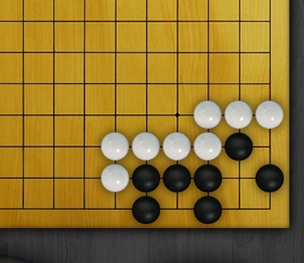

How to Play Go/Baduk
By: Brooklyn
Introduction
Go or Baduk is a fascinating and challenging game that has been played for centuries in East Asia. Its simple rules belie the incredible depth and complexity that skilled players must understand to excel. Unlike most games, there is no element of chance in Go/Baduk; every move either builds or sacrifices position, and one wrong move can cost the game. In this section, we'll introduce the basic terminology and rules of the game, as well as some tips for strategy and practice.
If you're brand new to Go/Baduk, you'll want to start with the basics. The game is played on a board, with a grid of intersecting lines that form black and white "stones" (generally made of plastic or glass). The objective of the game is to gain as much territory on the board as possible, by strategically placing stones and capturing your opponent's stones.
There are two types of moves in Go/Baduk: placement and capture. Placement involves putting a stone onto an empty intersection of the board, while capture involves removing an opponent's stone by surrounding it on all sides. The player with the most valuable positions on the board (by capturing the most stones and having the most territory) at the end of the game wins.
One of the most basic strategy tips is to establish a strong position early in the game. Beginners often make the mistake of focusing too much on capturing stones, rather than building their own territory. Another key strategy is to keep your stones connected, both to keep them safe from capture and to build larger territories.
To really excel at Go/Baduk, however, requires a deep understanding of strategy, tactics, and reading (predicting potential moves and countering them). Professional players study the game for years to gain the necessary skills and techniques to compete at the highest level.
We hope this introduction to Go/Baduk has piqued your interest and inspired you to dive deeper into the complex world of this fascinating game.
ad space
Basic Rules
Go, also known as Baduk, is an ancient East Asian board game that has been enjoyed for over two thousand years. It has been described as the ultimate chess game, and is known to develop strategic thinking, patience, and concentration skills. While mastering the game may take years, beginners can quickly grasp the basic rules and start playing competitively in no time.
The basic rules of Go are simple: two players take turns placing black or white stones on a grid made up of 19 horizontal and 19 vertical lines, creating a pattern of interconnected stones. The aim of the game is to secure more territory on the board than your opponent by surrounding their stones or blocking their movements.
The game starts with an empty board, and the first player places a stone of their choice on any intersection. The second player then places their stone on any other intersection, and the game proceeds in this manner until all the intersections on the board have been filled.
As the game progresses, players try to surround or capture each other's stones by creating chains - groups of stones connected horizontally or vertically. When a chain of stones is completely surrounded by the opposing player's stones, it becomes captured and removed from the board. Capturing stones can enhance the territory a player controls.
In Go, players can also pass their turn if they do not want to play a stone. At the end of the game, players count how many intersections they have surrounded with their stones, as well as the captured stones, to determine the winner.
While these rules are easy to follow, Go's simple appearance belies the depth of strategy and tactics required to play the game well. It's a unique game that offers endless opportunities for analysis, exploration and satisfaction. So, if you want to challenge your mind and enjoy the beauty of an ancient game, learn the basic rules of Go today!
ad space
Advanced Rules and Strategies
If you're reading this, we're guessing you're experienced in the game of Go/Baduk and have a passion for delving deeper into the advanced rules and strategies that will take your gameplay to the next level. Congratulations, you're in the right place!
Go/Baduk is a captivating and complex game that challenges even the most skilled of experts, and the learning never really stops. Whether you want to compete in tournaments or simply improve your casual gameplay, you'll find a wealth of information in this section that will help you achieve your goals.
Ready to take on the next level of Go/Baduk? In this section, we explore advanced topics that include reading sequences, shape knowledge, endgame tactics, fuseki and joseki strategies, and much more. Unpacking these advanced rules and strategies requires a deep understanding of the game and years of practice, but with these expert tips, you'll be able to take your gameplay to the next level in no time!
Our expert contributors and authors have taken great care to provide you with a comprehensive and detailed guide that highlights what makes expert gameplay tick. As you explore this section, prepare to be challenged, inspired, and educated by some of the best players out there.
So what are you waiting for? Dive into this section, take your time to learn the advanced rules and strategies, and start unlocking the true potential of your Go/Baduk game today. From fine-tuning your technique to learning new moves, we'll help you achieve your goals and take your gameplay to new heights. Enjoy!
ad space
Professional Go/Baduk Players and Tournaments
As a fan of Go/Baduk, you may already know that the game has been played for centuries and continues to captivate players worldwide. The beauty of this game is its simplicity - a board, black and white stones, and two players. Yet, despite its straightforward nature, mastering the game requires tremendous skill, strategy, and mental agility.
One of the best ways to improve your Go/Baduk prowess is to learn from players who compete at the highest levels. That's why we've put together a comprehensive guide to professional Go/Baduk players and tournaments.
First, let's look at the top players in the game. At the pinnacle of the Go/Baduk world sits the Korea Baduk Association, which has produced some of the most successful talents in the game's history. Choi Cheolhan, Park Junghwan, and Lee Sedol are just a few of the names on the Korean Hall of Fame. In Japan, Yuki Satoshi and Iyama Yuta are reigning champs in the Go world, while China has produced some formidable Go players as well, such as Ke Jie.
Of course, every player starts somewhere, and it's not all about professional play. Amateur Go tournaments allow aspiring players to develop their skills while having fun. The World Amateur Go Championship and the US Go Congress are two prominent events. These tournaments showcase not only rising stars but also a community of Go enthusiasts from around the world.
Watching professional matches can offer valuable insights into strategies and techniques that you can use to enhance your gameplay. The annual Meijin and Kisei matches in Japan are significant highlights in the Go world, as are the World Go Championship and even national championships. These events often feature exciting upsets and surprises, making them a joy to watch for players of all levels.
In summary, professional Go/Baduk players and tournaments are a fascinating part of the Go/Baduk world. They offer valuable learning opportunities as well as a chance to witness the mastery of the game's greats. Whether you are a beginner or an advanced player, make sure to check out these incredible events and players on your journey to Go/Baduk mastery.
ad space
Online Learning and Playing Resources
As the popularity of Go (also known as Baduk) continues to rise, players from all over the world are seeking resources to improve their skills and learn about the game's strategy. Fortunately, with the advent of the internet, there are now a plethora of online resources available to players of all levels.
Whether you're a beginner looking for instructional videos, an intermediate player seeking interactive lessons, or an advanced player looking for a community to test your skills against, there are resources available that cater to your needs.
One of the most popular resources for learning and playing Go online is the KGS Go Server. This platform allows players to connect with others from all over the world to play games, as well as access tutorials and analysis tools to improve their skills. In addition, players can become members of Go clubs and participate in tournaments for a more competitive experience.
Another online resource for learning Go is the website Go Game Guru. This website is dedicated to providing players with instructional videos, articles, and game commentaries to help them improve their understanding of the game. The site also offers a community forum where players can ask questions and discuss topics related to the game.
For those looking for a more immersive learning experience, online Go courses are also available. The website GoMaster Academy offers a comprehensive curriculum for players looking to learn Go at their own pace. The site offers courses for players of all levels, from beginners to advanced players, and includes video lessons, quizzes, and analysis tools to track progress.
Overall, with the wide range of online resources available, players of all levels can improve their skills and enjoy the game of Go from the comfort of their own homes. So what are you waiting for? Start exploring these resources today and take your Go skills to the next level!
ad space
Conclusion
After mastering the basics and learning the strategy, it's time to put your skills to the test. The conclusion of your Go journey is an opportunity to showcase your abilities and challenge your opponents with newfound confidence. In this section, we'll explore some of the important things to keep in mind and strategies to employ when playing Go.
First and foremost, remember that Go is a game of balance. Your success hinges on finding a harmonious balance between offense and defense, and knowing when to make bold moves and when to play it safe. Keep evaluating the board, analyzing your opponent's moves, and adapting your strategies as the game progresses.
Another key factor to keep in mind is the importance of the endgame. As the board becomes more crowded and there are fewer places left to play, the endgame becomes crucial. Seize every opportunity to claim territory and make your presence felt on the board, while also protecting your own pieces and avoiding careless mistakes.
Finally, don't forget that Go is a social game. While competition is important and can be intense, it's also an opportunity to connect with others who share your love of the game. Join a club or attend tournaments, and make friends with other players, regardless of their skill level.
In conclusion, Go is a complex and challenging game that rewards patience, strategy, and attention to detail. By mastering the basics, honing your skills, and approaching the game with a balanced and strategic mindset, you can become a skilled player and enjoy the many benefits of this ancient and fascinating game.
ad space